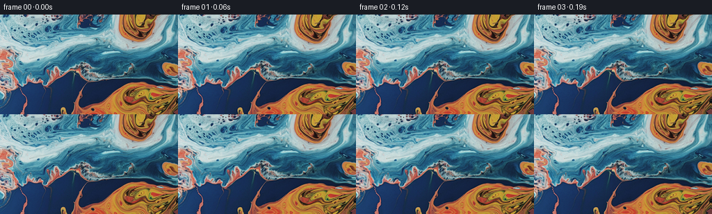
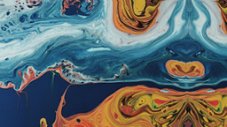
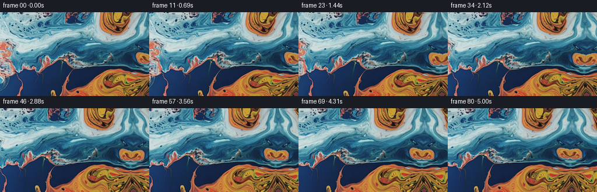

CODING AGENTS AS PIXEL WORLD MODELS
traex/DeepSeek-V4.1-Flash · 0002_s3
点击播放 · 原生 RGB 像素
逐轮保存的候选
回放视频、检查图与代码变化。
每份候选均可单独播放。实际图片检查记录在下方工具轨迹中。
候选 01播放与检查图
点击播放 · 原生 RGB 像素
展开代码变化
--- 上一保存版本
+++ 本次保存版本
@@ -0,0 +1,124 @@
+from pathlib import Path
+
+import cv2
+import numpy as np
+from PIL import Image
+
+import artifact_io
+
+
+CASE_DIR = Path(__file__).resolve().parent
+FRAME_COUNT = 81
+HEIGHT = 144
+WIDTH = 256
+FPS = 16.0
+PAN_PIXELS = 43.0
+WORLD_EXTENSION = 176
+
+
+def _smoothstep(value):
+ value = np.clip(value, 0.0, 1.0)
+ return value * value * (3.0 - 2.0 * value)
+
+
+def _extend_world(image):
+ height, width = image.shape[:2]
+ world = np.empty((height, width + WORLD_EXTENSION, 3), dtype=np.float32)
+ world[:, :width] = image
+
+ yy, xx = np.mgrid[0:height, width:width + WORLD_EXTENSION].astype(np.float32)
+ distance = xx - (width - 1.0)
+ ramp = _smoothstep(distance / 20.0)
+
+ # A gently sheared reflection continues the paint beyond the source edge.
+ source_x = (width - 1.0) - distance
+ source_x += ramp * (
+ 3.2 * np.sin(2.0 * np.pi * yy / 83.0 + distance * 0.031)
+ + 1.4 * np.sin(2.0 * np.pi * yy / 37.0 - distance * 0.067)
+ )
+ source_y = yy + ramp * (
+ 1.7 * np.sin(distance * 0.071 + 2.0 * np.pi * yy / 101.0)
+ + 0.8 * np.cos(distance * 0.113)
+ )
+ extension = cv2.remap(
+ image,
+ source_x.astype(np.float32),
+ source_y.astype(np.float32),
+ interpolation=cv2.INTER_CUBIC,
+ borderMode=cv2.BORDER_REFLECT_101,
+ )
+
+ # The reflection carries the edge colors outward, with a slow low-frequency
+ # variation so the extension does not read as a hard tiled duplicate.
+ tint = (
+ 2.2 * np.sin(distance * 0.047 + yy * 0.019)
+ + 1.2 * np.cos(distance * 0.089 - yy * 0.027)
+ )
+ extension = extension.astype(np.float32) + tint[..., None] * np.array(
+ [0.72, 0.45, 0.32], dtype=np.float32
+ )
+ world[:, width:] = np.clip(extension, 0.0, 255.0)
+ return world
+
+
+def _flow_displacement(xx, yy, time):
+ phase = time * 2.0 * np.pi
+
+ dx = (
+ 2.45 * np.sin(2.0 * np.pi * yy / 112.0 + phase * 0.105 + 0.35)
+ + 1.35 * np.sin(2.0 * np.pi * (xx + 0.34 * yy) / 163.0 - phase * 0.127)
+ + 0.58 * np.cos(2.0 * np.pi * (0.63 * xx - yy) / 91.0 + phase * 0.173)
+ + 2.4 * (time / 5.0625)
+ )
+ dy = (
+ 1.65 * np.cos(2.0 * np.pi * xx / 137.0 - phase * 0.094)
+ + 0.95 * np.sin(2.0 * np.pi * yy / 69.0 + phase * 0.141 + 0.8)
+ + 0.43 * np.sin(2.0 * np.pi * (xx + 1.8 * yy) / 104.0 - phase * 0.181)
+ )
+ return dx, dy
+
+
+def _camera_offset(time):
+ progress = np.clip(time / ((FRAME_COUNT - 1) / FPS), 0.0, 1.0)
+ eased = _smoothstep(progress)
+ return PAN_PIXELS * (0.18 * progress + 0.82 * eased)
+
+
+def _finish_frame(sampled):
+ frame = np.clip(sampled, 0.0, 255.0)
+ # Recover a little of the source's fine marbling after the subpixel warp.
+ soft = cv2.GaussianBlur(frame, (0, 0), 0.55)
+ frame = np.clip(frame + 0.16 * (frame - soft), 0.0, 255.0)
+ return np.rint(frame).astype(np.uint8)
+
+
+def generate():
+ source = np.asarray(Image.open(CASE_DIR / "first_frame.png").convert("RGB"), dtype=np.uint8)
+ if source.shape != (HEIGHT, WIDTH, 3):
+ raise ValueError(f"unexpected first frame shape: {source.shape}")
+
+ world = _extend_world(source)
+ yy, xx = np.mgrid[0:HEIGHT, 0:WIDTH].astype(np.float32)
+ frames = np.empty((FRAME_COUNT, HEIGHT, WIDTH, 3), dtype=np.uint8)
+ frames[0] = source
+
+ for index in range(1, FRAME_COUNT):
+ time = index / FPS
+ dx, dy = _flow_displacement(xx, yy, time)
+ pan = _camera_offset(time)
+ map_x = xx + pan + dx
+ map_y = yy + dy
+ sampled = cv2.remap(
+ world,
+ map_x.astype(np.float32),
+ map_y.astype(np.float32),
+ interpolation=cv2.INTER_CUBIC,
+ borderMode=cv2.BORDER_REFLECT_101,
+ )
+ frames[index] = _finish_frame(sampled)
+
+ return frames
+
+
+if __name__ == "__main__":
+ artifact_io.save(generate(), CASE_DIR)
候选 02播放与检查图
点击播放 · 原生 RGB 像素

展开代码变化
--- 上一保存版本
+++ 本次保存版本
@@ -104,7 +104,8 @@
for index in range(1, FRAME_COUNT):
time = index / FPS
- dx, dy = _flow_displacement(xx, yy, time)
+ flow_time = time * (0.15 + 0.85 * _smoothstep(index / 12.0))
+ dx, dy = _flow_displacement(xx, yy, flow_time)
pan = _camera_offset(time)
map_x = xx + pan + dx
map_y = yy + dy
候选 03播放与检查图
候选 04播放与检查图
点击播放 · 原生 RGB 像素

展开代码变化
--- 上一保存版本
+++ 本次保存版本
@@ -106,6 +106,9 @@
time = index / FPS
flow_time = time * (0.15 + 0.85 * _smoothstep(index / 12.0))
dx, dy = _flow_displacement(xx, yy, flow_time)
+ flow_envelope = _smoothstep(index / 14.0)
+ dx *= flow_envelope
+ dy *= flow_envelope
pan = _camera_offset(time)
map_x = xx + pan + dx
map_y = yy + dy
候选 05播放与检查图

可观测工具轨迹
实际执行的命令与返回图片。
命令 1exit 0
/bin/bash -c "pwd && rg --files -g 'prompt.txt' -g 'GENERATION_RULES.md' -g 'first_frame.png' -g '"'!*.mp4'"'"
命令 2exit 0
/bin/bash -c "sed -n '1,240p' prompt.txt"
命令 3exit 0
/bin/bash -c "sed -n '1,280p' GENERATION_RULES.md"
命令 4exit 0
/bin/bash -c "file first_frame.png && identify first_frame.png 2>/dev/null || true && find . -maxdepth 2 -type f -printf '%p %s bytes\\n' | sort | head -80"
命令 5exit 0
/bin/bash -c "sed -n '1,260p' artifact_io.py"
命令 6exit 0
/bin/bash -c "sed -n '1,200p' task_spec.json"
命令 7exit 0
/bin/bash -c "python - <<'PY'
from PIL import Image
import numpy as np
im=Image.open('first_frame.png').convert('RGB')
a=np.asarray(im)
print(im.size, a.shape, a.dtype, a.min(), a.max(), a.mean(axis=(0,1)))
PY"命令 8exit 0
/bin/bash -c "ffmpeg -version | head -3; python - <<'PY' import importlib.util for n in ['cv2','scipy','skimage','imageio','numpy','PIL']: print(n, bool(importlib.util.find_spec(n))) PY"
命令 9exit 0
/bin/bash -c 'python generate.py'
命令 10exit 0
/bin/bash -c "python - <<'PY'
import numpy as np
from PIL import Image
from pathlib import Path
p=Path('frames')
a=np.array([np.asarray(Image.open(p/f'{i:02d}.png')) for i in range(81)])
print('shape/dtype', a.shape, a.dtype)
print('first identical', np.array_equal(a[0],np.asarray(Image.open('first_frame.png').convert('RGB'))))
d=np.abs(a[1:].astype(np.int16)-a[:-1].astype(np.int16))
means=d.mean(axis=(1,2,3))
print('temporal MAE min/median/max', means.min(), np.median(means), means.max())
print('frame 1/40/80 means', means[0],means[39],means[-1])
print('temporal max', d.max())
print('frame luminance range', a.mean(axis=(1,2,3)).min(), a.mean(axis=(1,2,3)).max())
PY"命令 11exit 0
/bin/bash -c "python generate.py && python - <<'PY'
import numpy as np
from PIL import Image
from pathlib import Path
p=Path('frames')
a=np.array([np.asarray(Image.open(p/f'{i:02d}.png')) for i in range(81)])
d=np.abs(a[1:].astype(np.int16)-a[:-1].astype(np.int16))
means=d.mean(axis=(1,2,3))
print('first identical:', np.array_equal(a[0],np.asarray(Image.open('first_frame.png').convert('RGB'))))
print('temporal MAE min/median/max:', *[round(x,3) for x in (means.min(),np.median(means),means.max())])
print('opening 10:', np.round(means[:10],2).tolist())
print('ending 5:', np.round(means[-5:],2).tolist())
PY"命令 12exit 0
/bin/bash -c "python generate.py && python - <<'PY'
import numpy as np
from PIL import Image
from pathlib import Path
a=np.array([np.asarray(Image.open(Path('frames')/f'{i:02d}.png')) for i in range(81)])
d=np.abs(a[1:].astype(np.int16)-a[:-1].astype(np.int16))
m=d.mean(axis=(1,2,3))
print('first identical:',np.array_equal(a[0],np.asarray(Image.open('first_frame.png').convert('RGB'))))
print('temporal MAE min/median/max:',*[round(x,3) for x in (m.min(),np.median(m),m.max())])
print('opening:',np.round(m[:12],2).tolist())
PY"命令 13exit 0
/bin/bash -c "python - <<'PY'
from pathlib import Path
import json
import numpy as np
from PIL import Image
p=Path('.')
z=np.load('pixels.npz')
print('npz keys:',z.files,'shape:',z['pixels'].shape,'dtype:',z['pixels'].dtype)
raw=z['pixels']
a=np.stack([(raw[:,:,i]>>16 & 255).astype(np.uint8) for i in range(81)],axis=0)
# More directly validate every frame against PNG output.
ok=True
for i in range(81):
q=np.asarray(Image.open(p/'frames'/f'{i:02d}.png'))
ok &= np.array_equal(a[i],q)
print('npz matches all PNG frames:',ok)
print('PNG count:',len(list((p/'frames').glob('*.png'))))
html=(p/'index.html').read_text()
print('player bytes:',len(html),'contains payload:', '__DATA__' not in html)
print('generated files:',', '.join(sorted(x.name for x in p.iterdir() if x.is_file())))
PY"命令 14exit 1
/bin/bash -c "python - <<'PY'
import numpy as np
from PIL import Image
raw=np.load('pixels.npz')['pixels']
a=np.stack([(raw[:,:,i]>>16 & 255).astype(np.uint8) for i in range(81)],axis=0)
for i in range(81):
q=np.asarray(Image.open(f'frames/{i:02d}.png'))
if not np.array_equal(a[i],q):
pos=np.argwhere(a[i]"'!=q)[0]
y,x,c=pos
print('"'mismatch',i,(y,x,c),a[i,y,x],q[y,x])
print('raw packed',raw[y,x,i],hex(int(raw[y,x,i])))
break
PY"命令 15exit 1
/bin/bash -c "python - <<'PY'
import numpy as np
from PIL import Image
raw=np.load('pixels.npz')['pixels']
a=np.stack([(raw[:,:,i]>>16 & 255).astype(np.uint8) for i in range(81)],axis=0)
for i in range(81):
q=np.asarray(Image.open(f'frames/{i:02d}.png'))
if not np.array_equal(a[i],q):
y,x,c=np.argwhere(a[i]"'!=q)[0]
print('"'mismatch',i,(y,x,c),a[i,y,x,c],q[y,x,c])
break
else:
print('all match')
PY"命令 16exit 0
/bin/bash -c "python - <<'PY'
import numpy as np
from PIL import Image
raw=np.load('pixels.npz')['pixels']
a=np.stack([(raw>>16)&255,(raw>>8)&255,raw&255],axis=-1).astype(np.uint8).transpose(2,0,1,3)
print('decoded:',a.shape)
for i in range(81):
q=np.asarray(Image.open(f'frames/{i:02d}.png'))
if not np.array_equal(a[i],q):
y,x,c=np.argwhere(a[i]"'!=q)[0]
print('"'mismatch',i,(y,x,c),a[i,y,x,c],q[y,x,c])
break
else:
print('npz matches all 81 PNG frames')
PY"命令 17exit 0
/bin/bash -c "python - <<'PY'
import numpy as np
from PIL import Image
raw=np.load('pixels.npz')['pixels']
a=np.stack([(raw>>16)&255,(raw>>8)&255,raw&255],axis=-1).astype(np.uint8).transpose(2,0,1,3)
orig=np.asarray(Image.open('first_frame.png').convert('RGB'))
d=np.abs(a[1:].astype(np.int16)-a[:-1].astype(np.int16))
print('frames',a.shape[0],'size',f'{a.shape[2]}x{a.shape[1]}','fps',16.0,'duration',(a.shape[0]-1)/16)
print('frame 00 exact',np.array_equal(a[0],orig))
print('all RGB uint8',a.dtype==np.uint8 and a.min()>=0 and a.max()<=255)
print('temporal continuity MAE median/max',round(float(np.median(d.mean(axis=(1,2,3)))),3),round(float(d.mean(axis=(1,2,3)).max()),3))
print('final mean RGB',np.round(a[-1].mean(axis=(0,1)),2).tolist())
PY"命令 18exit 0
/bin/bash -c 'git status --short 2>/dev/null || true; du -h pixels.npz index.html inspection.png frames | tail -6'
视觉工具实际返回图片 1

视觉工具实际返回图片 2

视觉工具实际返回图片 3

视觉工具实际返回图片 4

视觉工具实际返回图片 5

保存候选 5 份；完成命令 18 次；可验证图片返回 5 张。原始 API 响应与完整日志保留在本地。